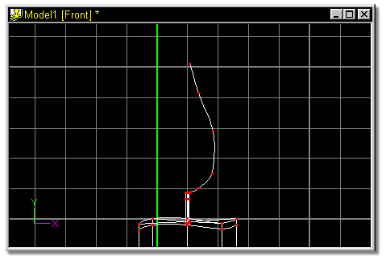
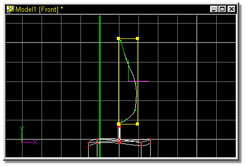
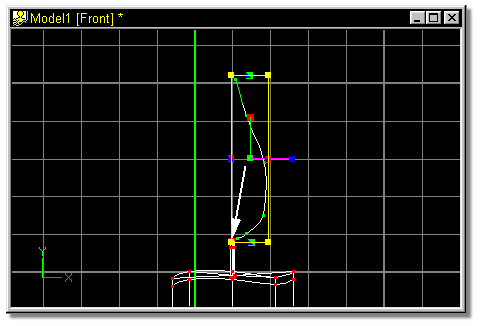
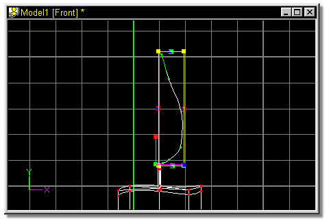

The final step in modeling the candle is to build the flame.

Group the points that were just added by selecting any point along the spline
and pressing the “/” key.

Click the Scale Manipulator, then move the pivot down and to the left by
clicking on the center handle and dragging it with the mouse in the direction of the
white arrow as shown in figure 42.

Figure 42
Figure 43 shows the new pivot position after being moved.

 Click the Add Lock button and add 6 points in a teardrop shape near the wick.
Figure 40 shows this spline.
Click the Add Lock button and add 6 points in a teardrop shape near the wick.
Figure 40 shows this spline.